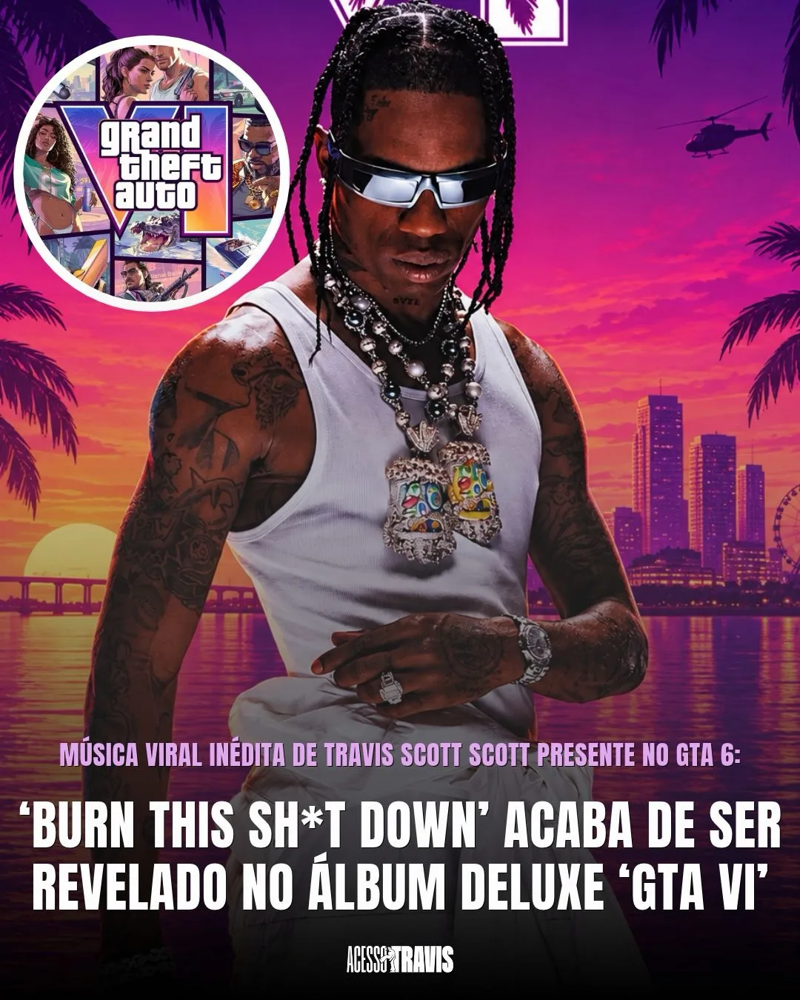

🚨 BombandoFinalmente entre nós: GTA VI: The Album ganha deluxe com 23 faixas
A deluxe chegou com inéditas, incluindo “Burn This Sh*t Down”, música que nunca tinha sido lançada e viralizou depois de aparecer nas missões do jogo.
♥ 760💬 8Ver post ↗